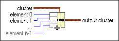

Bundle Function
Owning Palette: Cluster, Class, & Variant VIs and Functions
Requires: Base Development System
Assembles a cluster from individual elements.
You also can use this function to change the values of individual elements in an existing cluster without having to specify new values for all elements. To do so, wire the cluster you want to change to the middle cluster terminal of this function. When you wire a cluster to this function, the function resizes automatically to display inputs for each element in the cluster. The connector pane displays the default data types for this polymorphic function.

 Add to the block diagram Add to the block diagram |
 Find on the palette Find on the palette |